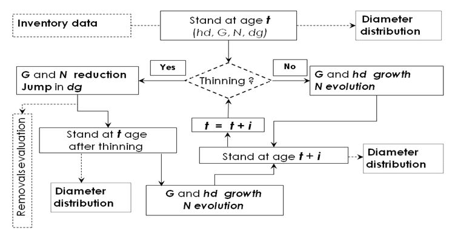
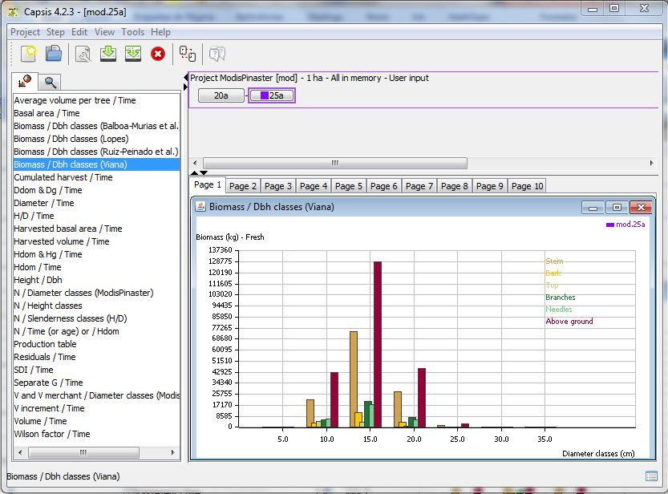
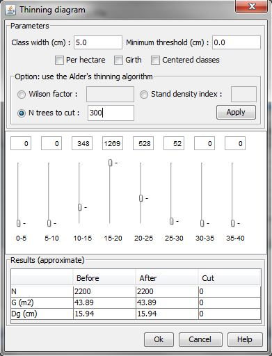
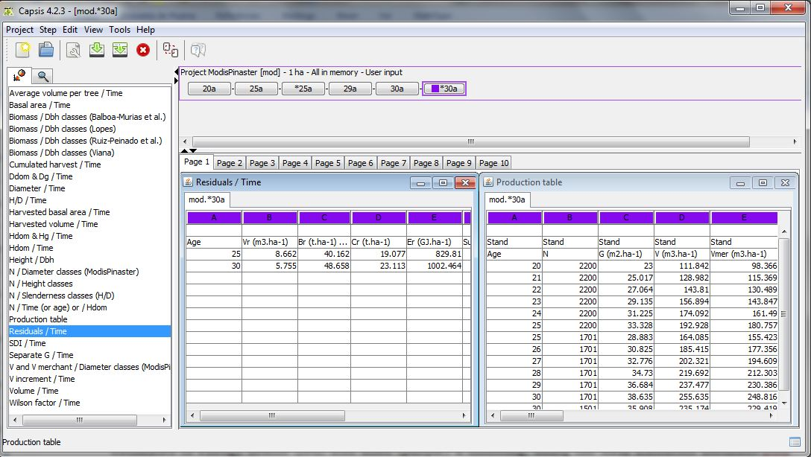

start => help_en
ModisPinaster Model
ModisPinaster is a diameter distribution model for Pinus pinaster stands (Model with Diameter Distribution for P. Pinaster), originally developed by Fonseca (2004). It applies to pure maritime pine stands, thinned or unthinned. Stands might be homogeneous in horizontal distribution or having an irregularly shaped diameter distribution.
ModisPinaster was implemented in Capsis platform in June 2009 by F.Coligny and T. Fidalgo Fonseca under COST Action FP0603. Contribution for the data base and for the site index module was given by C.P. Marques. Contribution for the diameter distribution fitting was given by B. R. Parresol.
Improvement of the original version was made in May 2011 (COST Action FP0603).
A new release become available in October 2012 with the support of COST Action FP0902. Contribution for the extended estimates of wood energy in the new release was given by H. Viana.
ModisPinaster authors' are T. Fonseca (UTAD, Portugal), C.P. Marques (UTAD, Portugal), B.R. Parresol (USDA Forest Services, USA), F. Coligny (AMAP, France) and H. Viana (IPV, Portugal).
Data used in model development come from the database on maritime pine (Data_Pinaster) created and maintained over the last two decades at the Forestry Department of University of Trás-os-Montes e Alto Douro. Data were collected in North Portugal, more precisely in Tâmega’s Valley stands (latitude range: 41º 15’N – 41º52’N; longitude range: 7º 20’ W – 8º 00’ W).
ModisPinaster is constituted by six components: (i) dominant height growth; (ii) basal area growth; (iii) tree mortality; (iv) diameter distribution; (v) thinning algorithm and (vi) volume or biomass assessment by diameter classes.
The relashionship between the components is shown in Figure 1.

Figura 1. ModisPinaster structure.
Major components
Dominant height growth and site index are estimated using Marques (1987) models.
Diameter distribution is modeled by Johnson’s SB (Johnson, 1949), using the 3-parameter recovery approach developed by Parresol (2003).
Evaluation of tree mortality is a two-phase process. In the first phase the model estimates the probabilibity of mortality to occur during the projection period. In a second phase the number of survival trees is calculated for the projection age and then it is adjusted by the probability of mortality to occur.
Probability of mortality is predicted by two sub-models, according to the major influences: wind or other causes, these being mainly related to density/competition effects.
Basal area growth is estimated with a growth model that accounts for tree mortality.
The procedure to simulate a thinning requires previous information on diameter distribution (current or simulated using the SB distribution). Trees to be removed from the diameter distribution are identified with a thinning algorithm (Alder 1979) that assumes a probability of survival to cut proportional to trees’ size. Inclusion of ModisPinaster into the Capsis platform extended the original thinning option to allow other selective thinnings (low, high, mixed) with the interactive thinning procedure developed by F. Coligny.
Volume by diameter classe is estimated using the volume (total e percentual) equations from Fonte (2000), and the height-diameter relashionships by Almeida (1999).
The model provides information about biomass and wood energy, with energy conversion factors by Viana (2012).
Carbon estimates are provided as option. Some scenes are presented in the following pictures.

Figura 2. ModisPinaster Input Dialog.

Figura 3. ModisPinaster Data Extractors. Example of Output.

Figura 4. ModisPinaster Intervention Dialog.

Figura 2. ModisPinaster Output. Residuals and Stand Table.
A synthesis of ModisPinaster development can be found in the document presented at the 11th Meeting of Capsis (Montpellier, 24 June 2009) modispinaster, also available in Capsis documentation, or in the document presented at the University of Helsinki (Finland), 17-18 September 2009, under the 3rd Workshop and MC Meeting of the Cost Action FP0603.
For an overview of ModisPinaster
(Fonseca, T.F., B. Parresol, C. Marques, F. de Coligny, 2012. Models to Implement a Sustainable Forest Management – an Overview of the ModisPinaster Model. In: Sustainable Forest Management / Book 1”, InTech - Open Access Publisher. Chapter 18, p. 321-338. J. Martín García , J. J. Diez Casero (Ed.), ISBN: 978-953-51-0621-0.).
You may see also the tutorial.

Free copies
The new release of ModisPinaster can be downloaded for free directly from the Capsis website (http://www.inra.fr/capsis/models). Users can also get one installer by asking for a copy to the first author (tfonseca@utad.pt).
Acknowledgements
T.Fonseca acknowledges the scientific supervision of M.Tomé (ISA, Portugal) during the development of the original version of ModisPinaster.
The implementation of ModisPinaster in Capsis was supported by COST Action FP0603.
The adaptations made in October 2012, to provide a detailed output of biomass and wood energy estimates, were supported by COST Action FP0902.
References
Alder, D., 1979. A distance-independent tree model for exotic conifer plantations in east Africa. For. Sci. 25: 59-71.
Almeida, L.F.R., 1999. Comparação de metodologias para estimação de altura e volume em povoamentos de pinheiro bravo no Vale do Tâmega. Relatório Final de Estágio. UTAD, Vila Real, 114pp.
Fonte, C.M.M., 2000. Estimação do volume total e mercantil em Pinus pinaster Ait. no Vale do Tâmega. Relatório Final de Estágio. UTAD, Vila Real, 95pp.
Fonseca, T.F. 2004. Modelação do crescimento, mortalidade e distribuição diamétrica, do pinhal bravo no Vale do Tâmega. PhD. Thesis. University of Trás-os-Montes e Alto Douro, Vila Real, Portugal. 248 p.
Johnson, N.L. 1949. Systems of frequency curves generated by methods of translation. Biometrika 36: 149-176.
Marques, C. P., 1991. Evaluating site quality of even-aged maritime pine stands in northern Portugal using direct and indirect methods. For. Ecol. Manage. 41: 193-204.
Parresol, B.R. 2003. Recovering parameters of Johnson’s SB distribution. USDA For. Ser. Res. Pap. SRS-31. 9 p.
Viana, H., 2012. Modelling and mapping aboveground biomass for energy usage and carbon storage assessment in mediterranean ecosystems. PhD Thesis. University of Trás-os-Montes e Alto Douro, Vila Real, Portugal.